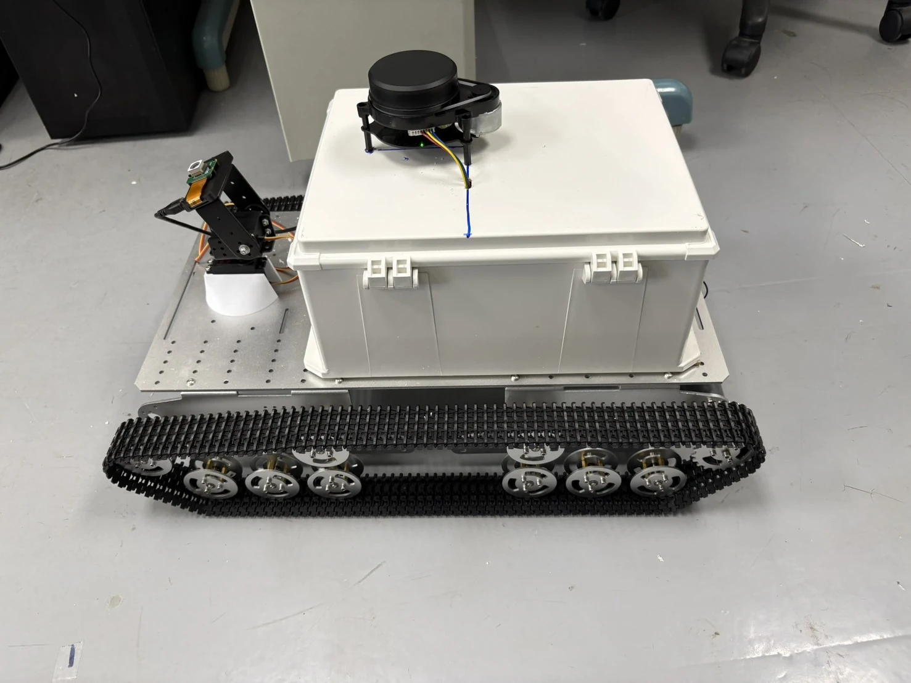

GreenMind
A tracked rover for guava-orchard inspections, combining close-range imagery and sensor data into clear, practical field records.
The service combines field data-acquisition equipment, the GreenMind Console, and orchard data cards and inspection reports delivered to farmers. It turns scattered photographs and field observations into traceable inspection records.
